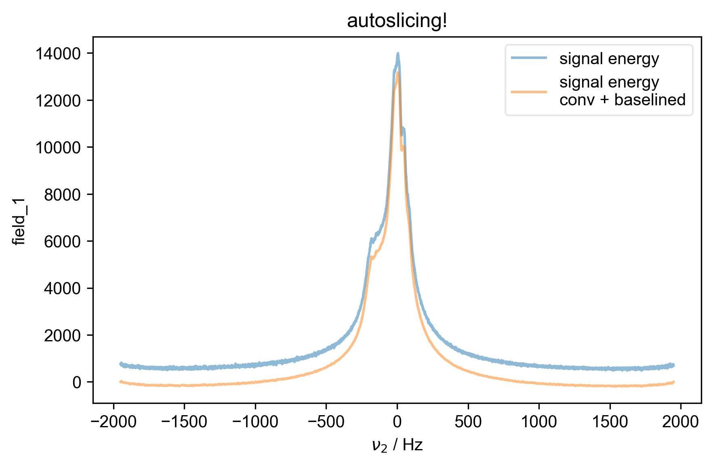
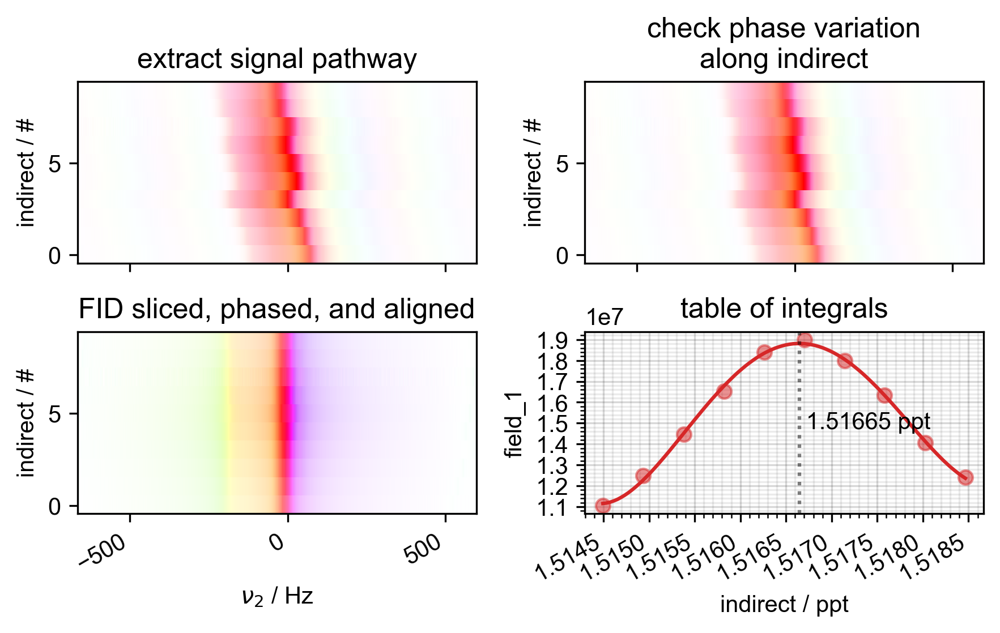
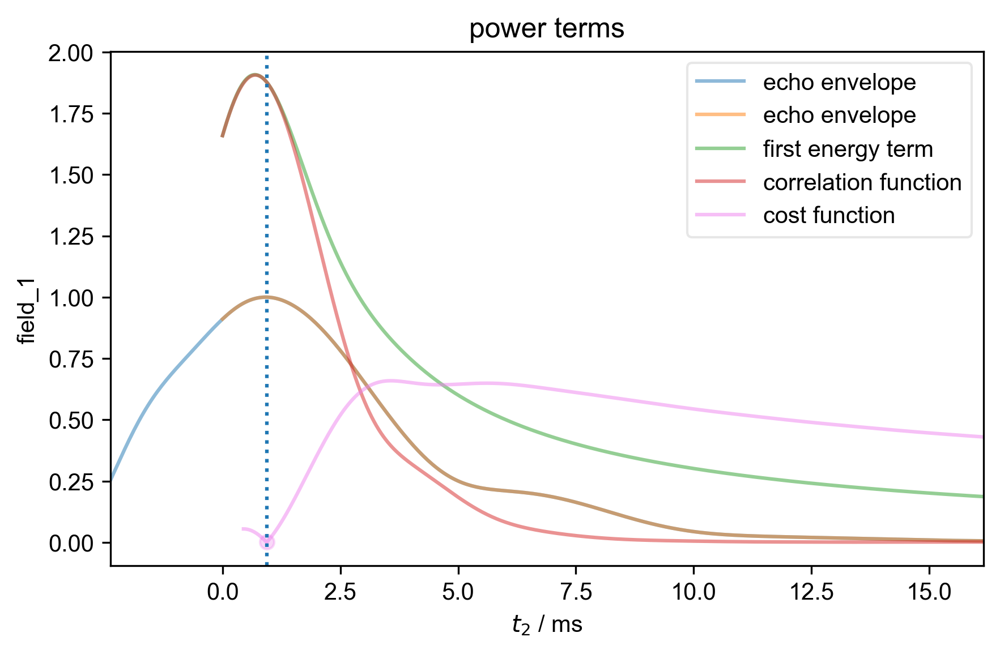
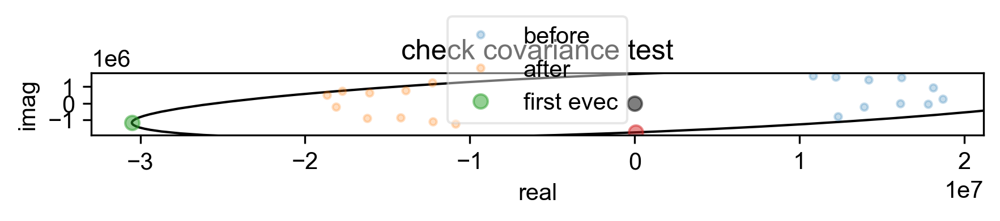
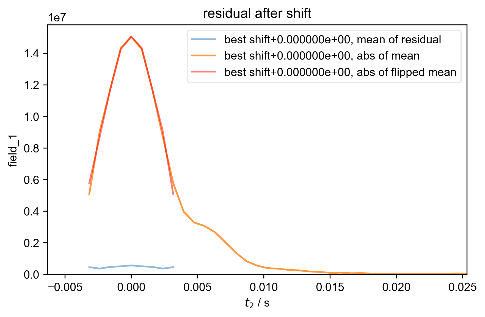

Note
Go to the end to download the full example code
Check NMR/ESR resonance ratio using a field sweep¶
Analyzes field sweep data. Determines the optimal field across a gradient that is on-resonance with the Bridge 12 μw frequency stored in the file to determine the resonance ratio of MHz/GHz.
- 
- 
- 
- 
- 
You didn't set units for indirect before saving the data!!!
#2ca02c
#2ca02c
1: autoslicing!
2: Raw Data with averaged scans
3: power terms |||ms
4: check covariance test
5: residual after shift |||('Hz', 'ppt')
import pyspecdata as psd
import pyspecProcScripts as prscr
import numpy as np
import matplotlib as mpl
import matplotlib.pyplot as plt
from numpy import r_
plt.rcParams["image.aspect"] = "auto" # needed for sphinx gallery
# sphinx_gallery_thumbnail_number = 2
plt.rcParams.update({
"errorbar.capsize": 2,
"figure.facecolor": (1.0, 1.0, 1.0, 0.0), # clear
"axes.facecolor": (1.0, 1.0, 1.0, 0.9), # 90% transparent white
"savefig.facecolor": (1.0, 1.0, 1.0, 0.0), # clear
"savefig.bbox": "tight",
"savefig.dpi": 300,
"figure.figsize": (6, 4),
})
thisfile, exp_type, nodename, label_str = (
"240924_13p5mM_TEMPOL_field.h5",
"ODNP_NMR_comp/field_dependent",
"field_1",
"240924 13.5 mM TEMPOL field sweep",
)
s = psd.find_file(
thisfile,
exp_type=exp_type,
expno=nodename,
lookup=prscr.lookup_table,
)
use_freq = True
with psd.figlist_var(black=False) as fl:
nu_B12 = s.get_prop("acq_params")["uw_dip_center_GHz"]
if use_freq:
# Unusually, we want to keep the units of the frequency in MHz
# (rather than Hz), because it makes it easier to calculate the
# ppt value.
s["indirect"] = s["indirect"]["carrierFreq"]
s.set_units("indirect", "MHz")
s["indirect"] = s["indirect"] / nu_B12
s.set_units("indirect", "ppt")
else:
# if we wanted to plot the field instead, we could set use_freq
# above to False
s["indirect"] = s["indirect"]["Field"]
s.set_units("indirect", "G")
s, ax4 = prscr.rough_table_of_integrals(s, fl=fl)
if use_freq:
assert s.get_units("indirect") == "ppt", "doesn't seem to be in ppt"
# {{{ use analytic differentiation to find the max of the polynomial
c_poly = s.polyfit("indirect", 4)
print(s.get_plot_color())
forplot = s.eval_poly(c_poly, "indirect", npts=100)
print(forplot.get_plot_color())
psd.plot(forplot, label="fit", ax=ax4)
theroots = np.roots(
(c_poly[1:] * r_[1 : len(c_poly)])[ # differentiate the polynomial
::-1
] # in numpy, poly coeff are backwards
)
theroots = theroots[
np.isclose(theroots.imag, 0)
].real # only real roots
idx_max = np.argmax(np.polyval(c_poly[::-1], theroots))
# }}}
ax4.axvline(x=theroots[idx_max], ls=":", color="k", alpha=0.5)
ax4.text(
x=theroots[idx_max],
y=0.5,
s=" %0.5f ppt" % theroots[idx_max],
ha="left",
va="center",
color="k",
transform=mpl.transforms.blended_transform_factory(
ax4.transData, ax4.transAxes
),
)
plt.subplots_adjust(hspace=0.5)
plt.subplots_adjust(wspace=0.3)
Total running time of the script: (0 minutes 3.743 seconds)